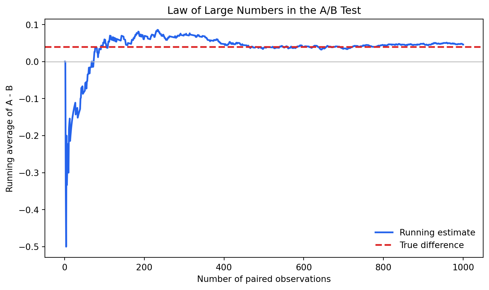
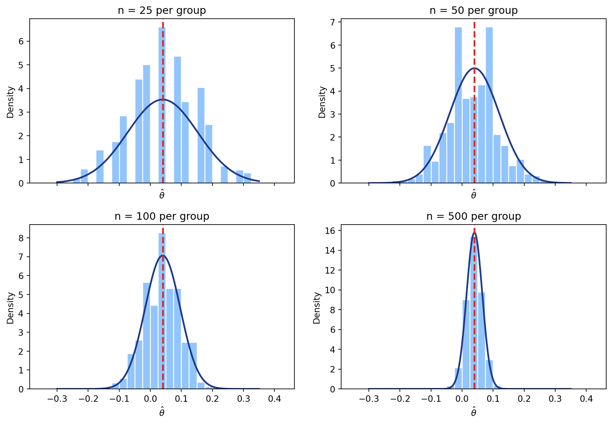

Simulating Key Ideas from Classical Frequentist Statistics
Author
Godwin
Published
April 15, 2026
Introduction
Imagine that I manage the homepage for a website that invites visitors to sign up for a newsletter. The sign-up box is small, but the words above it matter: a clearer or more persuasive call to action (CTA) could change how many visitors decide to subscribe.
For this experiment, I compare two possible CTAs:
CTA A: “Sign up for our newsletter here!”
CTA B: “Stay up to date by signing up!”
The goal is to learn which version leads to a higher sign-up rate. To do that, I use an A/B test. In an A/B test, visitors are randomly assigned to see one of two versions of a product, page, or message. Because assignment is random, the two groups should be similar except for the CTA they see. That lets us compare the sign-up rates and interpret the difference as evidence about which CTA performs better.
The A/B Test as a Statistical Problem
Each visitor either signs up or does not sign up, so each outcome can be represented as a binary variable:
A binary outcome like this is naturally modeled as a Bernoulli random variable. If a visitor sees CTA A, let the sign-up probability be \(\pi_A\). If a visitor sees CTA B, let the sign-up probability be \(\pi_B\).
The main quantity of interest is the difference in sign-up probabilities:
\[
\theta = \pi_A - \pi_B.
\]
If \(\theta > 0\), CTA A performs better. If \(\theta < 0\), CTA B performs better. If \(\theta = 0\), the two CTAs perform equally well. In practice, we estimate this quantity with the difference in sample means:
\[
\hat{\theta} = \bar{X}_A - \bar{X}_B.
\]
Because each observation is either 0 or 1, each sample mean is also a sample proportion.
Simulating Data
In a real A/B test, the true sign-up probabilities would be unknown. For this exercise, however, I set the true values myself so that I can study whether the estimator behaves the way frequentist theory says it should.
I assume:
\[
\pi_A = 0.22, \qquad \pi_B = 0.18.
\]
So the true effect is:
\[
\theta = 0.22 - 0.18 = 0.04.
\]
That means CTA A is truly better in this simulated world, but only by 4 percentage points.
In this simulated test, the estimated difference is close to the true difference of 4 percentage points, but it is not exactly equal to it because the sample is random.
The Law of Large Numbers
The Law of Large Numbers says that as the sample size grows, the sample mean converges to the population mean. In this setting, that gives us a reason to trust \(\hat{\theta} = \bar{X}_A - \bar{X}_B\): with enough visitors, the estimated difference in sample sign-up rates should get close to the true difference in sign-up probabilities.
To show this visually, I compute the element-wise difference between the CTA A and CTA B simulated draws. Each paired difference can be -1, 0, or 1. Then I plot the cumulative average of those differences as the sample size grows from 1 to 1,000.

Early in the plot, the running average moves around sharply because only a few observations have been included. As the number of observations grows, the curve becomes more stable and moves toward the true value of 0.04. This is the Law of Large Numbers in action: random noise is still present, but its influence becomes smaller as the sample grows.
Bootstrap Standard Errors
The point estimate tells us which CTA did better in the sample, but it does not tell us how precise that estimate is. A difference of 4 or 5 percentage points is more convincing when the standard error is small than when the standard error is large.
The bootstrap is a resampling method for estimating the variability of a statistic. The idea is to treat the observed sample as an approximation to the population. We repeatedly resample from the observed data with replacement, recompute the statistic each time, and use the spread of those bootstrap estimates as an estimate of uncertainty.
The bootstrap standard error and analytical standard error are very close, which is reassuring: the simulation-based estimate of uncertainty agrees with the formula-based estimate. The confidence interval is above zero in this simulated experiment, so the data provide evidence that CTA A performs better than CTA B.
The Central Limit Theorem
The Central Limit Theorem says that the sampling distribution of a sample mean becomes approximately Normal as the sample size grows, even when the underlying data are not Normally distributed. That matters here because each visitor’s outcome is Bernoulli, not Normal. The CLT still tells us that the difference in sample means, \(\hat{\theta}\), should become approximately Normal when each group has enough observations.
To demonstrate this, I repeatedly simulate A/B tests at four sample sizes: 25, 50, 100, and 500 visitors per group. For each sample size, I repeat the experiment 1,000 times and plot the resulting values of \(\hat{\theta}\).

When the sample size is small, the histogram is relatively rough because there are fewer possible values for the difference in two proportions. As the sample size increases, the distribution becomes smoother and more bell-shaped. The distribution also gets narrower, which means the estimator becomes more precise with larger samples.
Hypothesis Testing
The confidence interval suggests that CTA A may be better, but we can also frame the question as a formal hypothesis test. The null hypothesis is that the two CTAs have the same sign-up rate:
\[
H_0: \theta = 0.
\]
The alternative hypothesis is that the two CTAs have different sign-up rates:
\[
H_1: \theta \neq 0.
\]
To test this, we standardize the estimated effect:
\[
z = \frac{\hat{\theta} - 0}{SE(\hat{\theta})}.
\]
This standardization works because the CLT tells us that \(\hat{\theta}\) is approximately Normal for large samples. Under the null hypothesis, that distribution is centered at 0. Once we divide by the standard error, the test statistic is approximately standard Normal, which lets us calculate a p-value.
This test is sometimes casually called a “t-test” because it has the same basic structure as a two-sample t-test: estimate a difference, divide by a standard error, and compare the standardized statistic to a reference distribution. Strictly speaking, however, this Bernoulli A/B test is closer to a large-sample z-test. The exact classical t-test result assumes Normal data with an estimated variance. Here the data are binary, so the Normal approximation comes from the CLT.
At the conventional \(\alpha = 0.05\) level, the p-value is small enough to reject the null hypothesis. In this simulated experiment, the data provide evidence that the two CTAs do not have the same sign-up rate, and the observed direction favors CTA A.
The T-Test as a Regression
The two-sample test can also be written as a simple regression. Stack the two groups into one dataset with:
\(Y_i\), equal to 1 if the visitor signed up and 0 otherwise
\(D_i\), equal to 1 if the visitor saw CTA A and 0 if the visitor saw CTA B
The intercept, \(\beta_0\), is the expected sign-up rate when \(D_i = 0\), which is the mean of the CTA B group. The fitted value for CTA A is \(\beta_0 + \beta_1\). Therefore, \(\beta_1\) is the difference between the CTA A and CTA B means:
The regression coefficient on the CTA A indicator exactly matches the difference in sample means from the earlier calculation. The standard error and p-value are also very close to the two-sample results. Any small difference comes from how the variance is estimated: the simple OLS regression uses a pooled residual variance, while the earlier two-sample formula allowed the two Bernoulli variances to differ by group.
This equivalence matters because regression is flexible. The same framework can handle more complicated experiments with controls, interactions, fixed effects, or more than two treatment arms. In the simple A/B test, regression reproduces the familiar difference-in-means test; in more realistic settings, it extends the same logic.
The Problem with Peeking
Suppose my boss does not want to wait until the experiment is complete. Instead, she wants to check the results after every 100 visitors per group: after 100, 200, 300, and so on up to 1,000. If any test is significant at the 5% level, she wants to stop early and declare a winner.
That sounds efficient, but it creates a serious problem under classical frequentist testing. A single test at \(\alpha = 0.05\) has a 5% false positive rate when the null hypothesis is true. But if we repeatedly test accumulating data, each peek is another chance to get a false positive. The probability of at least one false rejection across all peeks can be much larger than 5%.
To show this, I simulate a world where the null hypothesis is true:
\[
\pi_A = \pi_B = 0.20.
\]
In that world, neither CTA is actually better. I then simulate 10,000 experiments. In each experiment, I peek after every 100 observations per group and record whether any p-value falls below 0.05.
The simulated false positive rate with repeated peeking is much higher than the nominal 5% rate. This happens even though the null hypothesis is true and there is no real difference between the CTAs.
The practical lesson is that A/B tests need a stopping rule. If we plan to test once at the end, we should wait until the planned sample size is reached. If we want to monitor results during the experiment, we should use a method designed for sequential testing rather than repeatedly applying an ordinary 5% test.